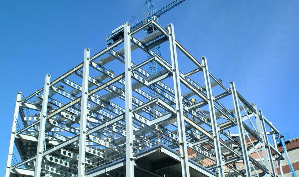
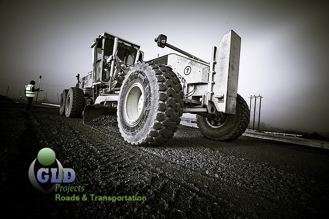

We manage different projects with a clear understanding of factors that may reduce projects success rate. From the
inception to the conclusion, our insights are applied to assure the success of the project progress in order to avoid
management risk.

Construction and Buildings
With construction project, we consider resources, schedule and jobs to be done according to the deadline; we always work with professionals in the specific field to make the project successful. From our short-term projects to the prospective long-term project, our method remains unbeatable.
Business Analysis and IT Project Management
We analyze your workflow from each input to output for we can propose a best process that might affect the performance of your business and improve your competitiveness. Our specialty is base on increasing availability of bottleneck resources and minimizes the non-value adding activities.

Roads and Transportation
Roads construction facilitates communication between cities as such Gld Projects plans & executes the project in the ways that all agents (participants in the project) are meant to work actively to complete the task. We manage roads construct and roads maintenance short-term project .
 ____
____